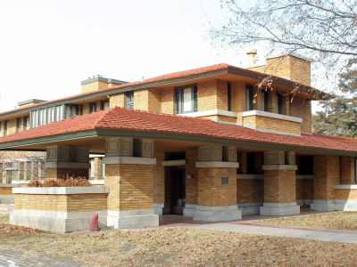
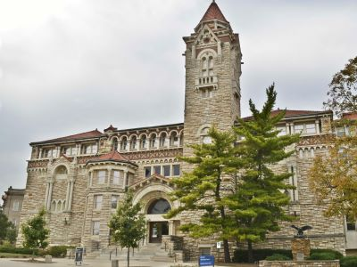
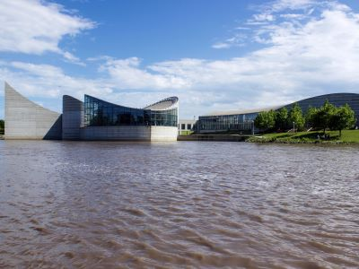
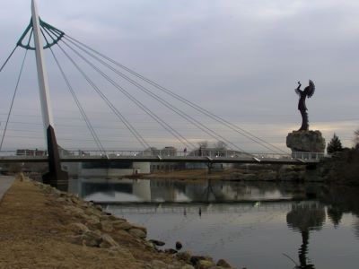
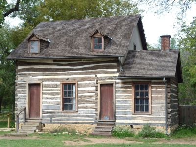
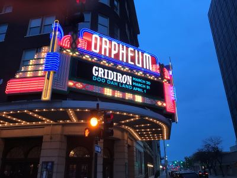
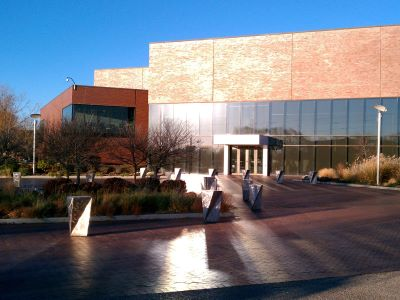
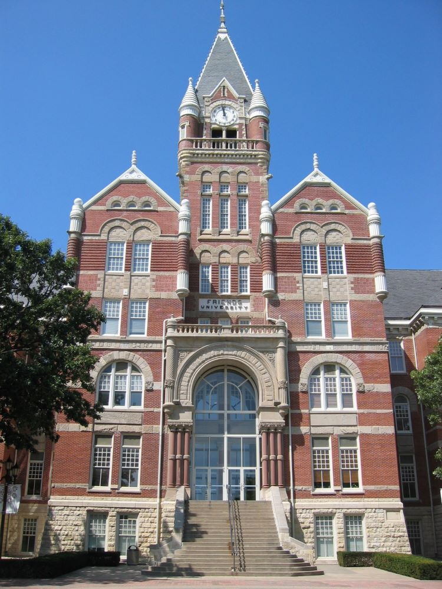
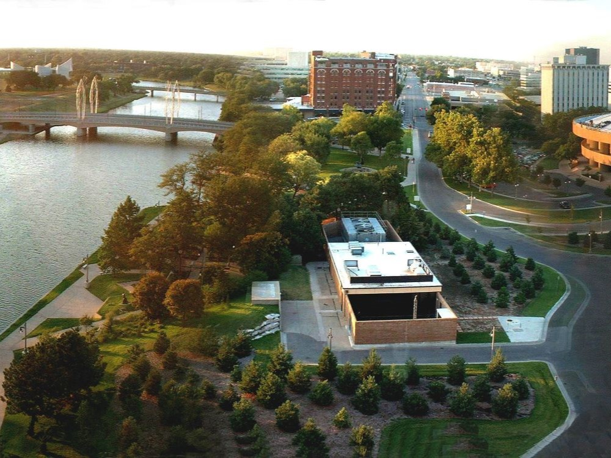

Wichita Travel Guide
Places to See in Wichita

Des Moines Guy, CC BY-SA 3.0, via Wikimedia Commons; Image Size Adjusted

Allen Lambe House
A meticulously restored Prairie-style residence showcasing immersive guided tours through its historically preserved architecture and furnishings.

Des Moines Guy, CC BY-SA 3.0, via Wikimedia Commons; Image Size Adjusted
Botanica, The Wichita Gardens
Expansive botanical attraction featuring themed gardens, interactive exhibits, and seasonal floral displays across 20 acres.
Des Moines Guy, CC BY-SA 3.0, via Wikimedia Commons; Image Size Adjusted
Central Riverside Park
Historic urban park featuring a wildlife exhibit, splash pad, playgrounds, sculptures, and scenic walking paths amid mature trees and open green spaces.

Danksergeant15, CC BY-SA 4.0, via Wikimedia Commons; Image Size Adjusted

Exploration Place
Interactive science center offering hands-on exhibits, a planetarium, live science shows, and immersive dome theater experiences for all ages.
Des Moines Guy, CC BY-SA 3.0, via Wikimedia Commons; Image Size Adjusted
Fountains at WaterWalk
Choreographed fountain attraction featuring synchronized water, light, and music shows in a scenic downtown riverfront setting.
Des Moines Guy, CC BY-SA 3.0, via Wikimedia Commons; Image Size Adjusted
Great Plains Nature Center
Environmental education center featuring native wildlife exhibits, paved nature trails, and interactive programs exploring the ecosystems of the Great Plains.
Des Moines Guy, CC BY-SA 3.0, via Wikimedia Commons; Image Size Adjusted
Kansas Aviation Museum
Historic aviation museum housed in a 1930s art deco terminal featuring vintage aircraft, flight simulators, and exhibits celebrating Kansas’s aviation legacy.

Dsmspence, CC BY-SA 3.0, via Wikimedia Commons; Image Size Adjusted

Keeper of the Plains
Iconic 44-foot steel sculpture representing a Native American figure, surrounded by a ceremonial plaza and nightly fire display at the confluence of two rivers.
Des Moines Guy, CC BY-SA 3.0, via Wikimedia Commons; Image Size Adjusted
Mid-America All-Indian Museum
Cultural museum dedicated to preserving and celebrating Native American heritage through exhibits, artifacts, educational programs, and community events.
Des Moines Guy, CC BY-SA 3.0, via Wikimedia Commons; Image Size Adjusted
Museum of World Treasures
Three-story museum showcasing global history through dinosaur fossils, ancient artifacts, military memorabilia, and presidential exhibits.

Jeff P from Berkeley, CA, USA, CC BY 2.0, via Wikimedia Commons; Image Size Adjusted
.jpg){kind=link}
Old Cowtown Museum
Living history museum recreating an 1870s frontier town with costumed interpreters, historic buildings, and immersive exhibits on early Wichita life.
Des Moines Guy, CC BY-SA 3.0, via Wikimedia Commons; Image Size Adjusted
Old Town
Historic warehouse district transformed into a vibrant entertainment, dining, shopping, and cultural destination featuring preserved brick buildings, public plazas, museums, nightlife, and year-round events.
Des Moines Guy, CC BY-SA 3.0, via Wikimedia Commons; Image Size Adjusted
Old Town Square
Historic public gathering space featuring open plazas, fountains, seasonal events, public art, and a splash pad that serves as a central destination for entertainment and community activities.

Jeff P from Berkeley, CA, USA, CC BY 2.0, via Wikimedia Commons; Image Size Adjusted
Orpheum Theatre
Historic performing arts venue known for its ornate architecture, live concerts, classic film screenings, and Broadway-style productions.
Des Moines Guy, CC BY-SA 3.0, via Wikimedia Commons; Image Size Adjusted
Ulrich Museum of Art
University art museum showcasing modern and contemporary works, including a renowned outdoor sculpture collection and rotating exhibitions by regional and international artists.
Des Moines Guy, CC BY-SA 3.0, via Wikimedia Commons; Image Size Adjusted
Veterans Memorial Park
Riverside park featuring over 18 memorials honoring U.S. military service members from multiple wars, with walking paths, sculptures, and educational displays.

Jeff P from Berkeley, CA, USA, CC BY 2.0, via Wikimedia Commons; Image Size Adjusted
Wichita Art Museum
Museum dedicated to American art with a permanent collection of over 10,000 works, rotating exhibitions, and an outdoor sculpture garden along the Arkansas River.
Des Moines Guy, CC BY-SA 3.0, via Wikimedia Commons; Image Size Adjusted
Wichita-Sedgwick County Historical Museum
Local history museum housed in a historic 1890 city hall building, featuring exhibits on Wichita’s cultural, industrial, and architectural heritage.
Overview
Wichita is the largest city in Kansas, on the Arkansas River in the south-central part of the state, and it is known as the "Air Capital of the World" because of its role in building general aviation aircraft by Cessna, Beechcraft, Learjet, and others. It also has a history as a cattle town at the end of the Chisholm Trail, and it was the birthplace of Pizza Hut and White Castle. The city's blend of aviation, industry, and Wild West history gives it a distinct character.
Visitors come to Wichita for Old Cowtown Museum, the Keeper of the Plains, Exploration Place, and the Wichita Art Museum. They also come for Botanica, the restaurants and bars of the Old Town warehouse district. The city is an affordable base for exploring the Flint Hills and the Great Plains.
History
The Wichita people lived along the Arkansas River for centuries, and the city was founded in 1868 as a trading post and named for them. In the 1870s it became a major cattle town on the Chisholm Trail, with saloons and railroad stockyards, and lawmen such as Wyatt Earp worked here. The discovery of oil and the growth of milling and manufacturing brought prosperity in the early twentieth century, and in the 1920s Clyde Cessna, Walter Beech, and Lloyd Stearman started aircraft companies here, making Wichita the center of the aviation industry. Spirit AeroSystems, Textron Aviation, and Koch Industries are among the city's major employers today.
Sightseeing and Popular Landmarks
The Keeper of the Plains is a 44-foot steel sculpture by Blackbear Bosin, standing at the confluence of the Arkansas and Little Arkansas Rivers and ringed by a Ring of Fire at night. Old Cowtown Museum is a living history museum of the 1870s with historic buildings and costumed interpreters, and Old Town is a restored warehouse district with restaurants, shops, and nightlife. The Allen-Lambe House is a Prairie School house designed by Frank Lloyd Wright, and the Fountains at WaterWalk and the Orpheum Theatre are other attractions.
Culture and Museums
The Wichita Art Museum has a collection of American art, including works by Mary Cassatt, Winslow Homer, and Edward Hopper. Exploration Place is a science center on the river, and the Kansas Aviation Museum is in the old Wichita Municipal Airport terminal. The Mid-America All-Indian Museum, the Museum of World Treasures, the Wichita-Sedgwick County Historical Museum, and the Ulrich Museum of Art at Wichita State University, which features a Joan Miró mural, are among the other museums.
Parks
Wichita has a large park system. Botanica has themed gardens and a children's garden, and the Great Plains Nature Center has trails and wildlife displays on the river. Central Riverside Park hosts the Riverfest each June, and Veterans Memorial Park is a quiet park with memorials. The Arkansas River Path is a popular trail for walking and biking, and the Sedgwick County Zoo is one of the most visited attractions in the state.
Seasons and Weather
Wichita has a humid subtropical to semi-arid climate and is in Tornado Alley. Summers are hot, with highs in the 90s°F, and winters are cold, with highs in the 40s°F and about 13 inches of snow. Spring and fall are mild, but severe thunderstorms and tornadoes are possible in spring and early summer, and the wind is a constant feature of life on the plains.
This article uses material from Wikipedia as well as information from official tourism and institutional sources. Key references include Visit Wichita, Old Cowtown Museum, Exploration Place, Wichita Art Museum, Sedgwick County Zoo, and National Weather Service Wichita. Wikipedia material is from the article "Wichita, Kansas", and is available under the Creative Commons Attribution-Share-Alike License 3.0.

.jpg){kind=link}
